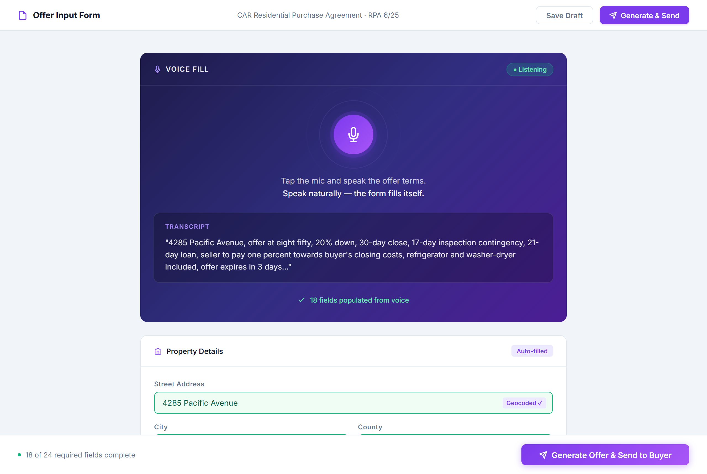

The California Residential Purchase Agreement is 27 pages long. For every offer a real estate agent writes, someone has to work through all of it: property details, buyer information, purchase price, loan terms, contingency windows, items included, cost allocations, expiration dates. Done carefully, it takes 30 to 45 minutes. Done quickly, mistakes happen.
And agents aren't writing one offer at a time. In a competitive market, a buyer's agent might be preparing multiple offers in a single afternoon, each on a different property, each with slightly different terms. The paperwork volume is relentless.
I built a tool that eliminates the manual entry entirely. The agent talks through the deal. The contract populates itself. It goes to the buyer to review, and the moment they accept, it routes automatically to the listing agent. The whole process, from blank form to delivered offer, takes about five minutes.
The Problem With the Standard Workflow
Most agents are still filling out purchase agreements by hand in zipForms or a PDF editor: clicking through fields one at a time, cross-referencing their notes, calculating contingency dates manually. It's painstaking work that demands focus at exactly the moment when an agent's attention should be on their client.
Even small errors in a purchase agreement can create real problems. A wrong contingency date gives the buyer less time than intended. A missing clause leaves something unresolved. A typo in a license number creates friction with the listing agent. The manual process produces these errors routinely. Agents are careful; careful attention applied to repetitive data entry still produces errors at volume.
In a competitive offer situation, speed matters as much as accuracy. An agent who can submit a clean, complete offer in five minutes has a real advantage over one still working through a form 40 minutes later.
What I Built
The tool is a web-based form that covers every field in the CAR Residential Purchase Agreement: property details, buyer information (for up to three buyers), both agents' names and DRE license numbers, purchase price, loan amount, down payment, close of escrow date, all four contingency types, items included and excluded, and cost allocations.
What makes it different is how the agent interacts with it. Instead of clicking through fields and typing, the agent speaks. At the top of the form there's a single voice input: tap the mic, speak the offer terms in plain conversational language, and the form populates across all the relevant fields at once. The agent doesn't narrate field by field; they just describe the deal the way they would to another person. The address connects to a live geocoding lookup, so mentioning the street address fills city, county, and zip code automatically.
The agent's profile (their name, brokerage, DRE number, and contact details) is saved locally and auto-fills on every new offer. Fields they use repeatedly don't need to be re-entered. Down payment calculates automatically from purchase price and loan amount and displays as a percentage. The form knows the difference between a COE expressed as a number of days after acceptance versus a specific calendar date.

How the Contract Flows
Agent dictates the deal details
Working from their notes or directly from a conversation with their buyer, the agent speaks through each section of the form. The whole thing typically takes four to six minutes. Fields that don't apply to the deal are skipped; the tool handles optional sections gracefully.
Contract is generated
When the agent submits, the populated data maps into the official CAR RPA PDF: every field in its correct position, formatted exactly as required. No reformatting, no re-entry, no copy-paste. The agent gets a completed, ready-to-send purchase agreement.
Sent to the buyer for review
The contract goes to the buyer automatically: an email with the PDF attached, a clear summary of the key terms, and a prompt to review and confirm. The buyer doesn't need to sign anything at this stage; this is a review step before the offer is officially submitted.
Buyer accepts, listing agent receives the offer
The moment the buyer confirms, the system routes the executed offer to the listing agent automatically. No manual forwarding, no "just checking you received this" follow-up. The listing agent gets the offer with a timestamp, and the buyer's agent gets a confirmation that it was delivered.
What This Changes in Practice
The obvious benefit is time: 30 to 45 minutes of form entry collapses to five minutes of conversation. The less obvious benefit is accuracy. When an agent is speaking deal terms rather than transcribing them, the information flows more naturally. They describe the deal, and the form handles the formatting.
It also changes what the agent can do while preparing an offer. Because the input is voice, they can be on the phone with their buyer during the process, confirming details in real time, answering questions, and making adjustments on the fly. The offer preparation becomes part of the conversation rather than separate from it.
And because it's a web-based tool that works on any device, agents aren't tied to their office anymore. An agent can walk out of a showing, sit in their car, and have a complete offer submitted to the listing agent before they pull out of the driveway. In a competitive market where offers sometimes need to go in within hours of a showing, that kind of mobility is a real edge. The old workflow required getting back to a desk, opening zipForms, and carving out 45 uninterrupted minutes. This one just requires a phone and a few minutes of talking.
The agents using this save time and write better offers: more accurate, more complete, submitted faster, from wherever they happen to be when the decision gets made.
How This Pattern Applies Elsewhere
Voice-to-form is a pattern worth thinking about any time you have a standardized document that gets filled out repeatedly from variable information. The CAR purchase agreement is an extreme case (27 pages, dozens of fields, high stakes), and the same approach works at smaller scales:
- Service businesses that generate quotes or proposals could dictate job details and have a formatted estimate generated automatically
- Law offices handling intake could have staff speak client information into a form that populates the engagement letter
- Property managers doing move-in inspections could dictate notes room by room and have a structured inspection report generate at the end
- Medical or dental practices could use voice intake to pre-populate patient forms before the appointment
The common thread: anywhere there's a standardized form, variable data, and a human who knows the information but has to manually enter it, voice-to-form can compress that step significantly.
Have a form your team fills out constantly?
A short conversation is usually enough to spot the highest-impact places to automate. Tell me the workflow and I'll tell you honestly whether it's worth building.
Start a Conversation